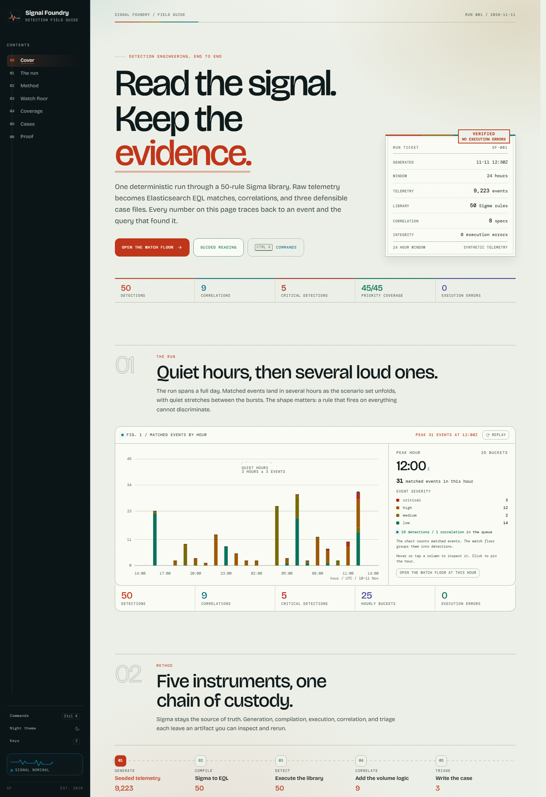
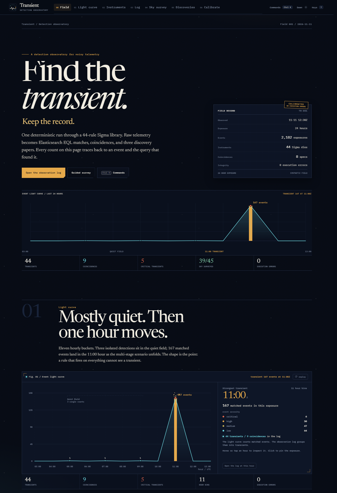

Archived comparison from the 44-rule run. Signal Foundry now runs 50 rules, 9,223 events, and 45/45 priority coverage; this page is kept as a design reference.
Same evidence, two readings
Signal Foundry and Transient read the same 2,182 events, the same 44 Sigma rules, and the same nine correlations. They disagree about how that evidence should feel. Signal Foundry is a case file you can hand to a reviewer. Transient is a night sky you scan until something moves.

Signal FoundryField guide / light Transient
TransientObservatory / nightThe frame is live. Switch pages, flip Transient to Dawn, or squeeze it to 390. Both files work offline from disk.
The numbers do not move between pages. The model, hierarchy, and first question do.
Design quality here is not a vote for the prettier page. It is a vote for the page that makes the detection work easier to trust.